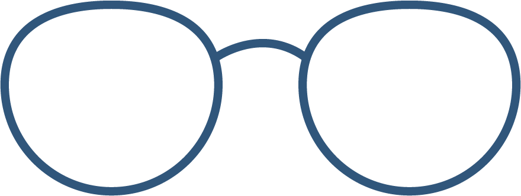

A muji pen is something that I always always have with me. It's specifically a 0.38 black one. I probably have between 5 and 10 muji pens sitting around my apartment, in my pencil case, or in my pockets. I do, however, buy (excessive amounts of) refills for them whenver I visit Hong Kong just because they're honestly cheaper there and it's become a tradition. My family members think that I'm a little crazy and extra for always buying so many and also for carrying one at all times, but I think it's just resourceful ;)
As a stereotypical millenial, yes, an iPhone X is among the most important items that I always carry. I use it mainly to make sure I stay connected with people – from text and iMessages to Facebook messenger to all my email accounts, it's an important tool for me. Of course, I also use it for the occasional (endless) scroll through Facebook's video content and to post to Instagram, specifically my design Instagram! My apps are all arranged by color, starting with a full page of white and then going through the rainbow until I reach the grays and blacks. I also talk to my bestie Siri every morning, just to ask her about the weather.

For as long as I can remember, glasses have been a part of my life. I got my first pair when I was around 4 years old, and this blue pair is probably my 11th pair of glasses! I have a pretty extensive eye history, but essentially, my glasses have been absorbed into part of my identity. My need for glasses and inability to get contacts have made me embrace glasses as a part of me, and I appreciate them to no end. These blue pair of Warby Parkers in particular have added more character to me than I think any other pair has, and I feel more like a designer than ever. I'm glad I have glasses as a constant to express myself in addition to everything else!